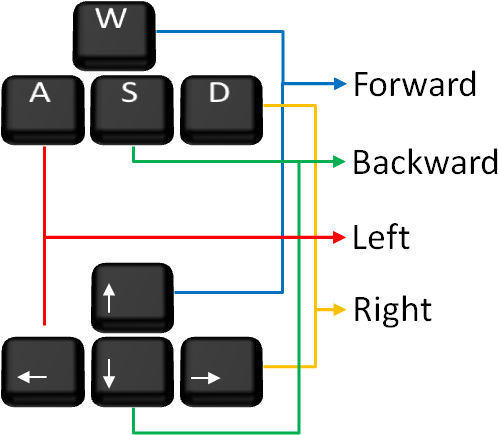

Frogger is a classic arcade game developed by Konami and originally published by Sega.

1. Pokemon starts on the grass, it needs to get to the water and not be caught in the Pokeball. 2. Control the Pokemon with buttons and avoid collisions with flying Pokeballs. 3. If the Pokemon reaches the water, you will receive one point. 4.If you can collect a star, then you get three extra points. 5. The goal is to accumulate as many points as possible. 6. If the Pokemon is caught, you will lose all accumulated points. 7. Press Space to pause the game.